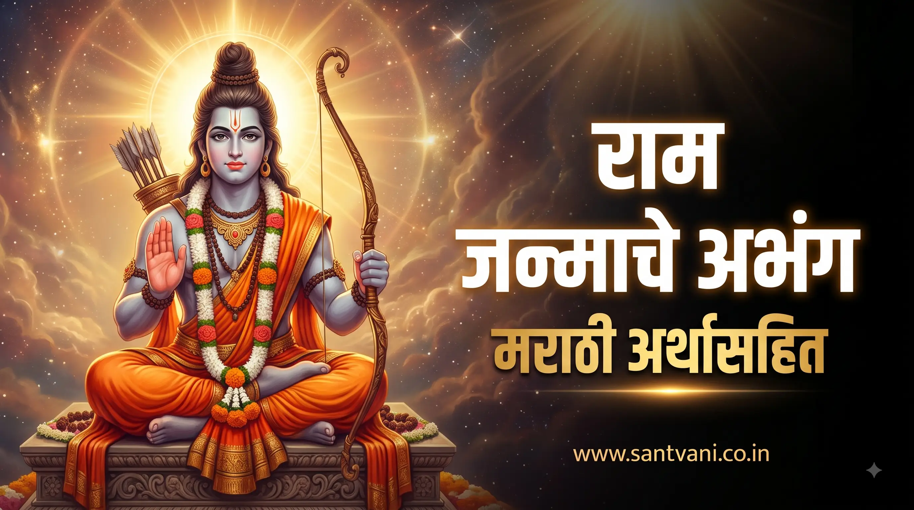
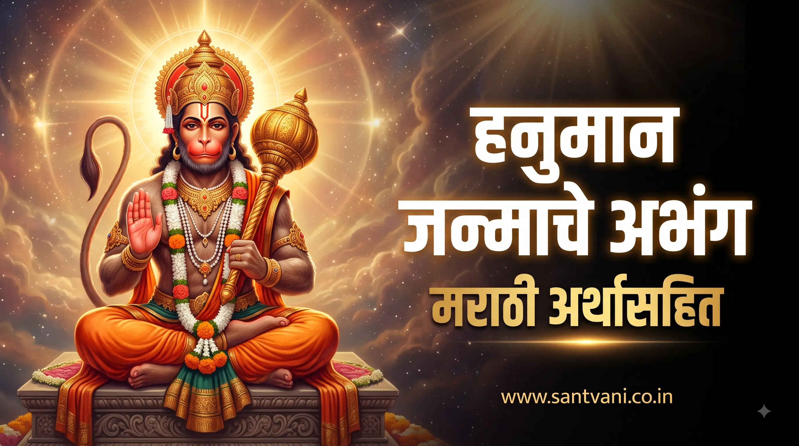
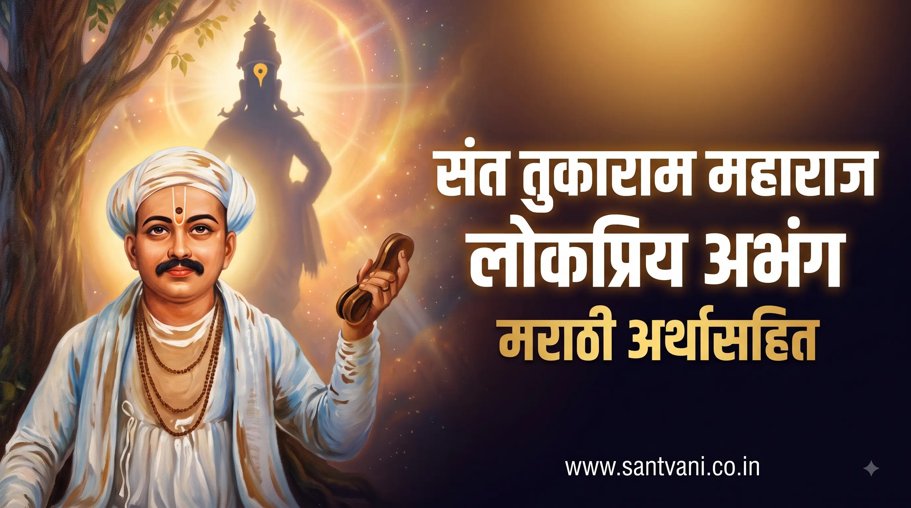
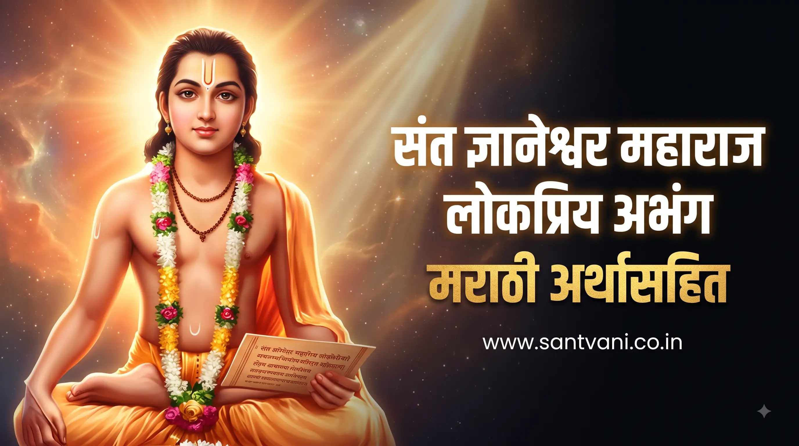
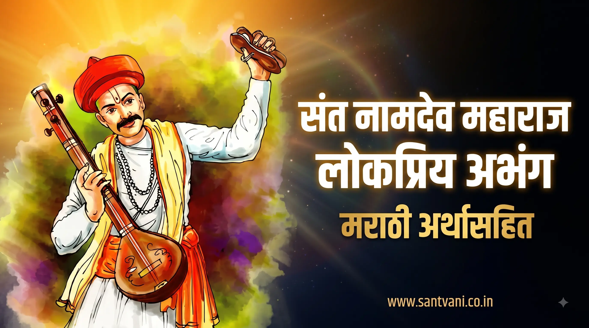

श्री राम जन्माचे निवडक अभंग – सार्थ भावार्थासह
प्रभू श्रीरामचंद्रांच्या अवताराचा आनंदोत्सव आणि राम जन्माच्या प्रसंगाचे वर्णन करणारे संतांचे मधुर आणि भावपूर्ण अभंग...
अभंग व अर्थ वाचा ➔
श्री महादेव (शिवशंभो) निवडक अभंग – सार्थ भावार्थ
भगवान महादेवांचे अलौकिक रूप, महिमा आणि हरि-हर अद्वैत दर्शवणारे विविध महान संतांचे निवडक शिव अभंग...
अभंग व अर्थ वाचा ➔
हनुमान (मारुती जन्माचे) अभंग – सार्थ भावार्थासह
बलभीम श्री हनुमंताच्या जन्मप्रसंगाचे आणि त्यांच्या अतुलित शक्तीचे वर्णन करणारे संतांचे प्रसिद्ध अभंग...
अभंग व अर्थ वाचा ➔
जगद्गुरु संत तुकाराम महाराज - प्रसिद्ध निवडक अभंग
'आनंदाचे डोही आनंद तरंग', 'वृक्षवल्ली आम्हा सोयरी' यांसारखे तुकोबांचे नित्य स्मरणातील श्रेष्ठ अभंग...
अभंग व अर्थ वाचा ➔
संत ज्ञानेश्वर माऊली - मधुर विरहिणी व निवडक अभंग
'रूप पाहता लोचनी', 'आजि सोन्याचा दिवस' यांसारख्या माऊलींच्या अलौकिक व भावमधूर रचनांचा संग्रह...
अभंग व अर्थ वाचा ➔संत एकनाथ महाराज - निवडक व लोकबोधात्मक अभंग
शांतीब्रह्म संत एकनाथ महाराजांचे सामाजिक प्रबोधन करणारे लोकप्रिय अभंग व प्रासादिक रचना...
अभंग व अर्थ वाचा ➔
संत नामदेव महाराज - प्रेमरसमय निवडक अभंग
'नाचू कीर्तनाचे रंगी', 'आम्ही दैवाचे दैवाचे' यांसारख्या भक्तशिरोमणी संत नामदेव महाराजांच्या प्रसिद्ध रचना...
अभंग व अर्थ वाचा ➔